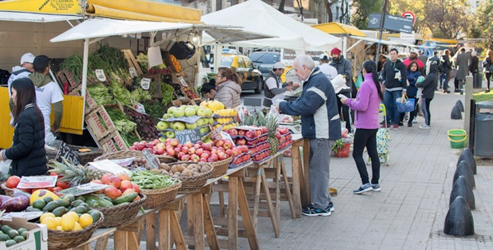
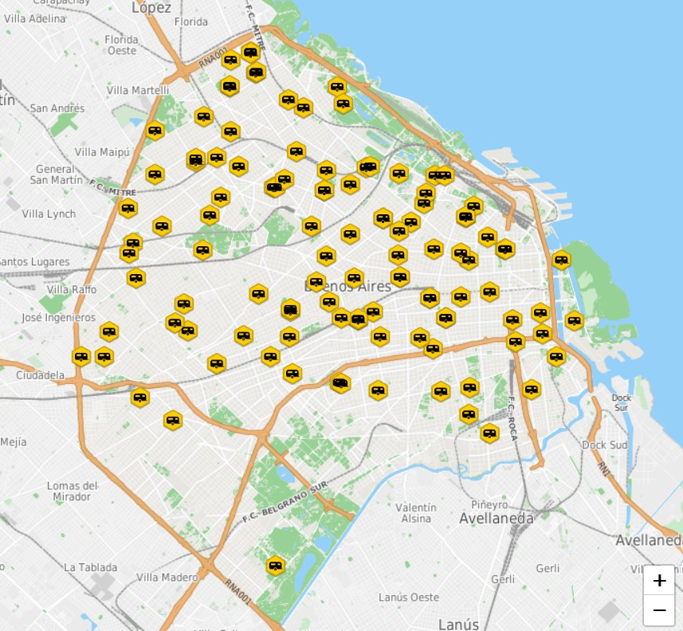

Las Ferias Itinerantes de Abastecimiento Barrial son una propuesta impulsada por el Gobierno de la Ciudad de Buenos Aires. Cuentan con quince puestos móviles en los que se venden productos básicos como carnes, pescados, frutas, verduras y lácteos, y rotan diariamente por más de 100 espacios verdes de la Ciudad de Buenos Aires, de lunes a domingos, de 8 a 14 hs.
Actualmente hay un total de 24 FIABs que llevan funcionando desde 1990 con el objetivo de asegurar el abastecimiento de productos de la canasta familiar en la mayor cantidad de consumidores y, a su vez, garantizar buena calidad y variedad con precios económicos. Según el Gobierno de la Ciudad de Buenos Aires, un promedio de 3.500 personas por día hacen sus compras en una de las ferias.
¿Qué diferencia a las FIABs de otras ferias?
La principal distinción de las FIABs es que mantienen arreglos y precios por debajo de las grandes cadenas y supermercados. Así, con esta propuesta, brindan a los ciudadanos una alternativa de precios manteniendo la calidad de los productos. Según el Informe PCRVM N° 02, cada dos semanas se lleva adelante un acuerdo de precios por 30 productos que forman parte de la canasta básica.

¿Cómo sé que es seguro?
La Dirección General de Ferias y Mercados del Gobierno de la Ciudad de Buenos Aires es la encargada de realizar las habilitaciones, garantizar las condiciones de higiene y el control bromatológico de los puestos. Fuente: NotiBUE
¿Cómo puedo participar de una FIAB?
Para poder participar, la Dirección de Permisos y Ferias es quien brinda los Permisos de Uso Precario —de uso personal, gratuito e intransferible— para cada puesto itinerante. El costo del trámite de inscripción es gratuito y la inscripción tiene un año de validez.
Requisitos obligatorios
- Ser mayor de edad
- Ser argentino (nativo, naturalizado o con radicación permanente)
- Constituir domicilio legal en CABA
- Presentar DNI y Certificado de Antecedentes Penales
- Información tributaria
- Certificado del Curso de Manipulación Higiénica de Alimentos (AGC)

Para conocer todos los requisitos y el circuito completo de ferias: buenosaires.gob.ar